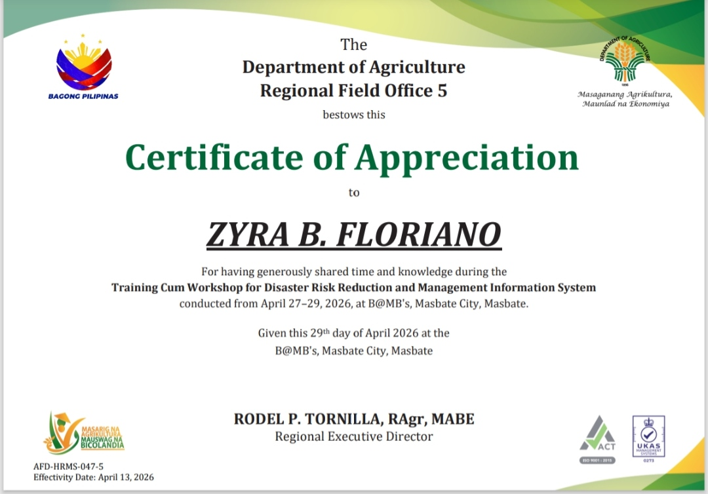
PRINT DESIGN
Certificate Design
Professional certificate layouts created for official activities, training workshops, and events during my internship.
CanvaI'm an Information Technology graduate with a passion for graphic design, web development, and visual creativity. I enjoy creating attractive, meaningful, and user-friendly designs that bring ideas to life.
↓ Download ResumeHi! I'm Francin B. Pielago, a Bachelor of Science in Information Technology graduate from Central Bicol State University of Agriculture – Sipocot Campus.
I have a strong interest in graphic design, web development, visual communication, and user interface design. I enjoy combining creativity and technology to develop functional and visually appealing outputs.
During my internship at the Department of Agriculture – Regional Field Office V, I designed certificates, participant IDs, event programs, name tags, and other visual materials.
I also helped create the DRRM Unit website, taking an active role in its visual design, front-end development, monitoring interfaces, and integration of weather-related features.
As part of our capstone project, I designed an IoT Safety Handbook using Canva, focusing on its cover design, page layout, typography, and presentation of information.
I'm eager to continue developing my skills and pursue opportunities in graphic design, UI design, and front-end web development.
Selected visual materials created using Canva during my internship and academic projects, showcasing creative layouts, document design, and visual presentation.

Professional certificate layouts created for official activities, training workshops, and events during my internship.
Canva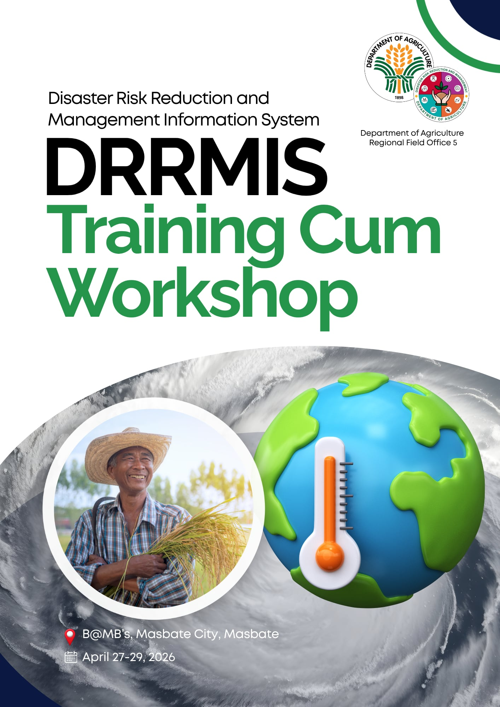
Organized and visually appealing event program layouts designed for workshops and official activities using Canva.
Canva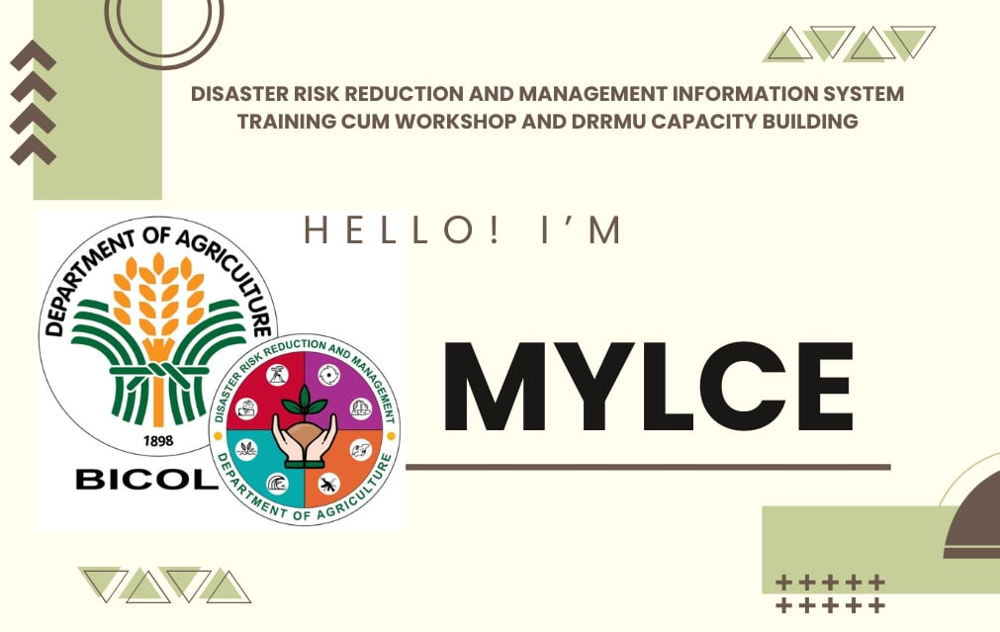
Participant identification cards and name tag layouts created for training workshops and official events.
Canva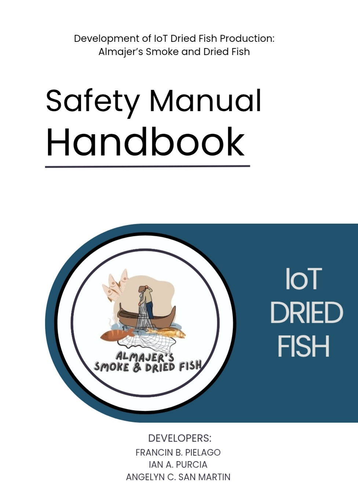
Designed the safety handbook for our IoT-Based Dried Fish Production and Monitoring System using Canva. Focused on cover design, typography, page layout, and the organized presentation of safety information.
CanvaA closer look at the projects I've worked on, the challenges they address, and my contributions to their design and development.
An automated drying system designed to support dried fish production through smart temperature control and web-based monitoring.
Explore Project Visuals ↓Our capstone project is an Internet of Things (IoT)-based dried fish production and monitoring system developed for Almajer Smoke & Dried Fish in San Cirilo, Pasacao, Camarines Sur.
It combines an enclosed drying chamber, automated temperature control, and a web-based monitoring platform to support the drying process.
Traditional sun-drying depends on favorable weather conditions. Rain, manual monitoring, inconsistent drying, and possible contamination can affect production.
Develop an enclosed IoT drying system with automated heater control, temperature and humidity monitoring, and a web dashboard for managing drying sessions.
Collaborated with the research team in system development and testing. I also designed the IoT Safety Handbook in Canva, focusing on visual layout, typography, and readability.
Screenshots of the web monitoring interface and the physical IoT drying system.
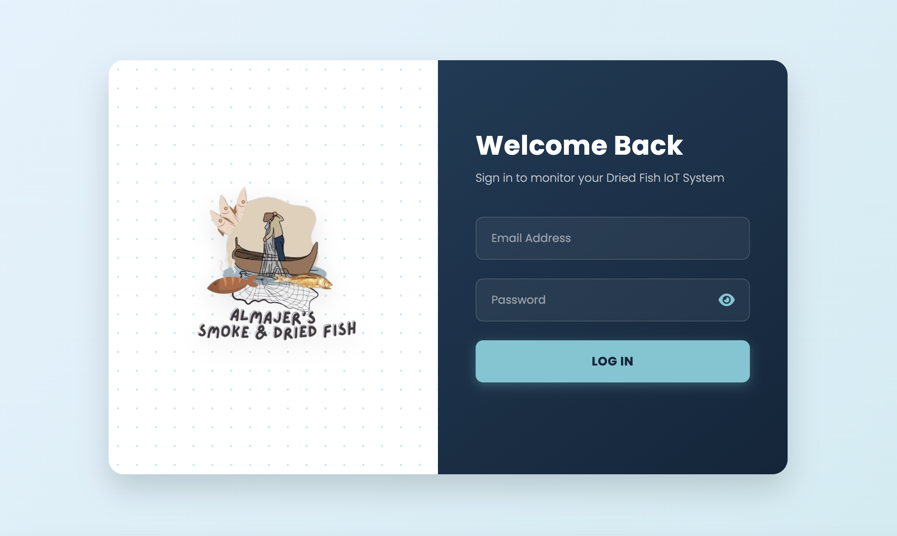
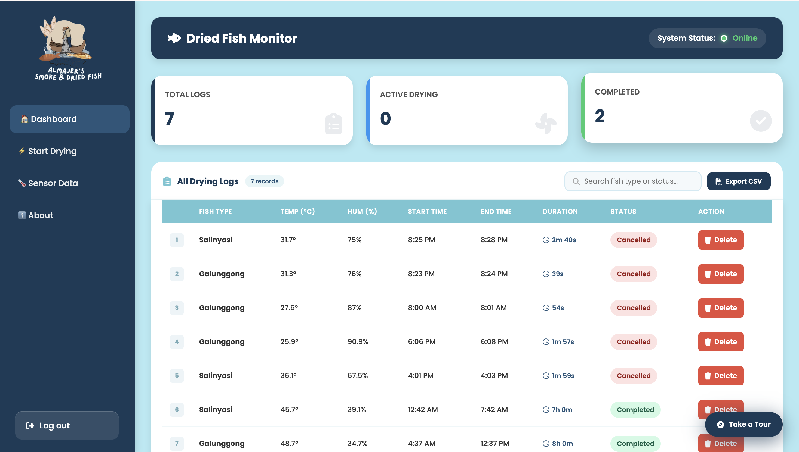
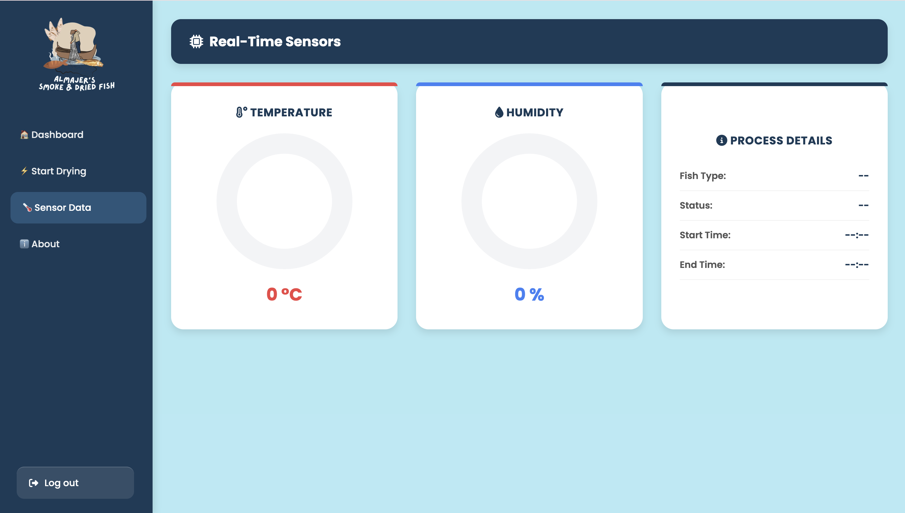
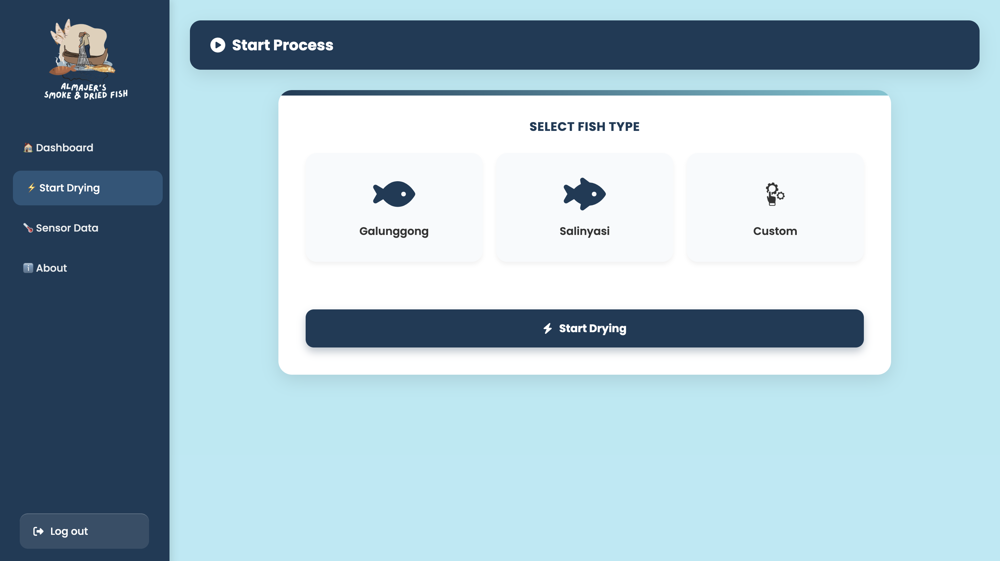
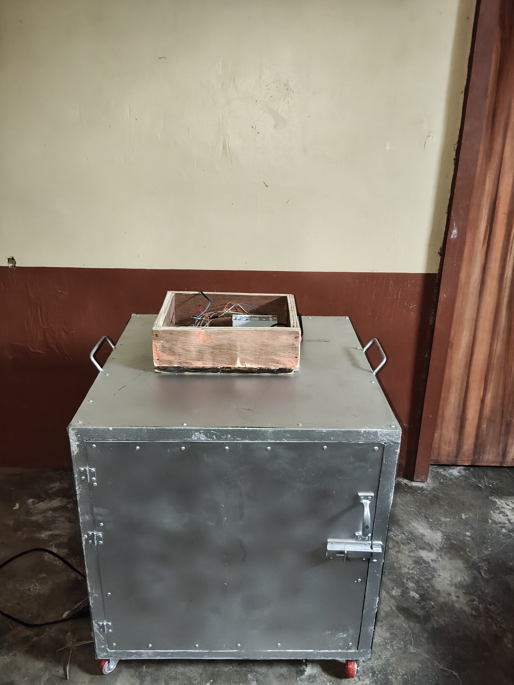
Collaborated with the research team in designing, developing, implementing, and testing the IoT-based system and its web-based monitoring platform.
I also designed the IoT Safety Handbook using Canva, focusing on its cover design, page layout, typography, and organized presentation of safety information.
View My Safety Handbook ↗Francin B. Pielago, Ian A. Purcia, and Angelyn C. San Martin
A web-based information platform developed for the DRRM Unit of the Department of Agriculture – Regional Field Office V.
Explore Project Visuals ↓During my internship at the Department of Agriculture – Regional Field Office V, I took an active role in creating and designing the website developed by our team for the Disaster Risk Reduction and Management (DRRM) Unit.
I worked on the website's visual layout, user interface, navigation, and front-end design, including monitoring features for weather and disaster-related information.
The website needed organized, easy-to-navigate interfaces for presenting monitoring information related to weather conditions and potential hazards.
Create a structured website layout and integrate monitoring features for Mayon Volcano, Heat Index information, and Windy weather visualization.
Worked on front-end development, website layout, navigation, monitoring interfaces, and integration of weather-related features during my internship.
Three website features I worked on during my internship at the DRRM Unit.
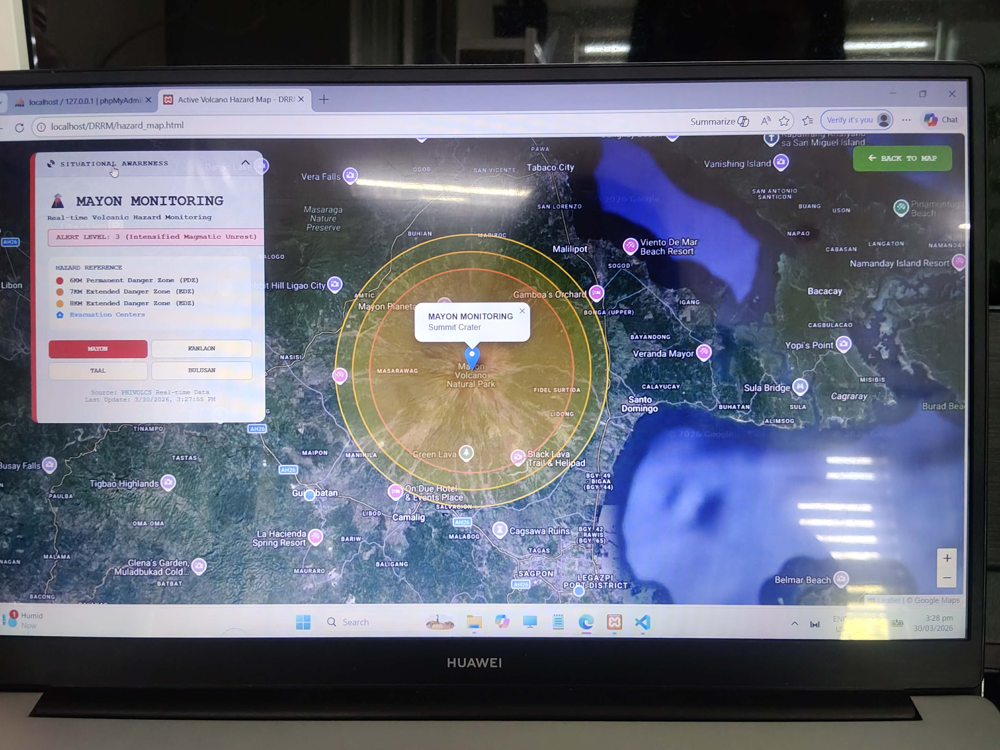
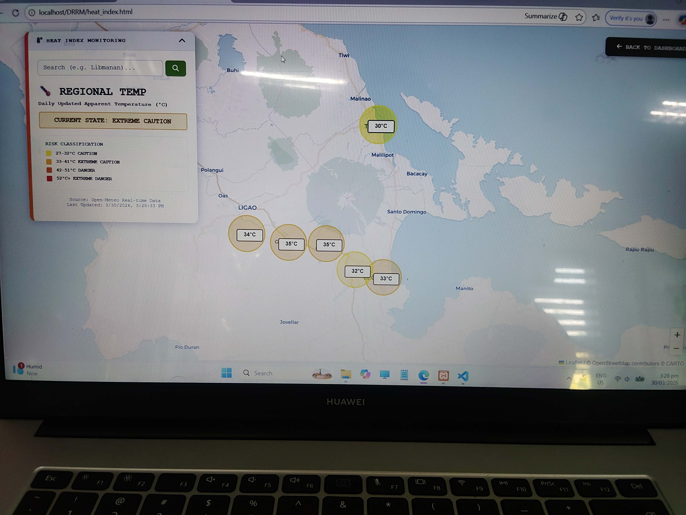
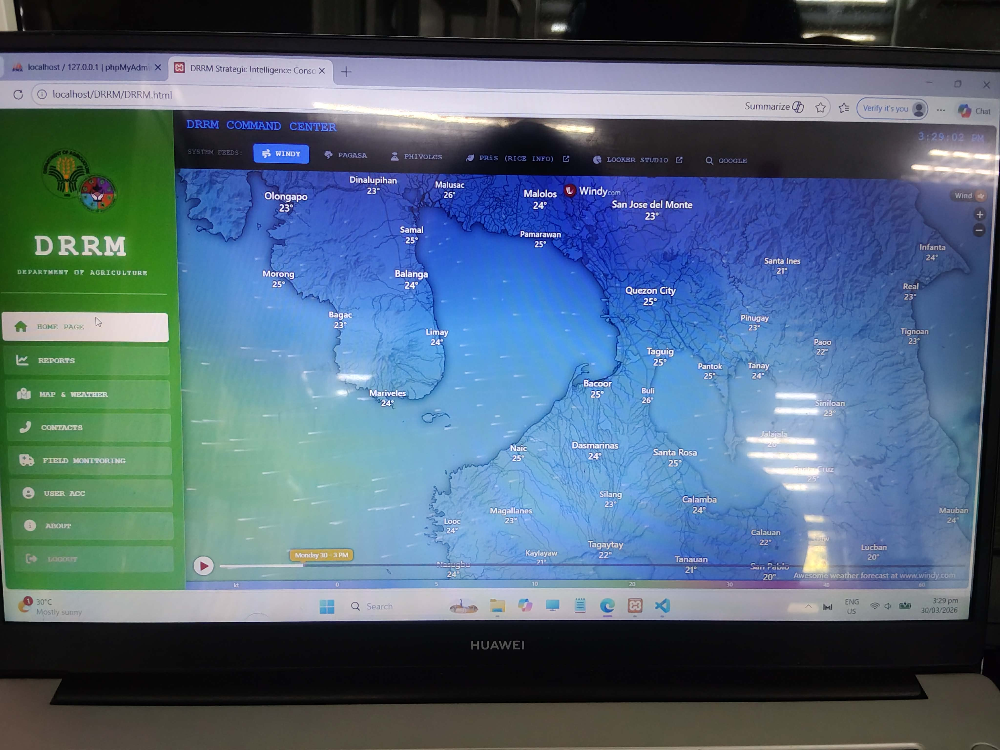
I took an active role in creating and designing the DRRM website during my internship. I worked on the website's overall visual layout, user interface, navigation, and front-end development.
My contributions included developing the Mayon Volcano Monitoring interface, integrating Heat Index Monitoring, and incorporating Windy weather visualization.
I focused on making the website organized, visually appealing, responsive, and user-friendly.
Department of Agriculture – Regional Field Office V, DRRM Unit, Pili, Camarines Sur
Creative layouts, certificates, event materials, and visual presentations.
Designing digital and print materials, safety handbooks, and creative layouts using Canva.
Typography, color coordination, visual hierarchy, and organized layouts.
HTML, CSS, JavaScript, responsive layouts, and user-friendly interfaces.
Microsoft Word, Excel, PowerPoint, and document preparation.
Creativity, teamwork, communication, adaptability, and attention to detail.
Department of Agriculture – Regional Field Office V
Disaster Risk Reduction and Management (DRRM) Unit
Pili, Camarines Sur
My educational background in Information Technology.
Central Bicol State University of Agriculture – Sipocot Campus
Developed foundational knowledge in programming, web development, database management, and information technology.
I'm open to graphic design opportunities, front-end development roles, creative collaborations, and professional connections.
Quezon City, Philippines